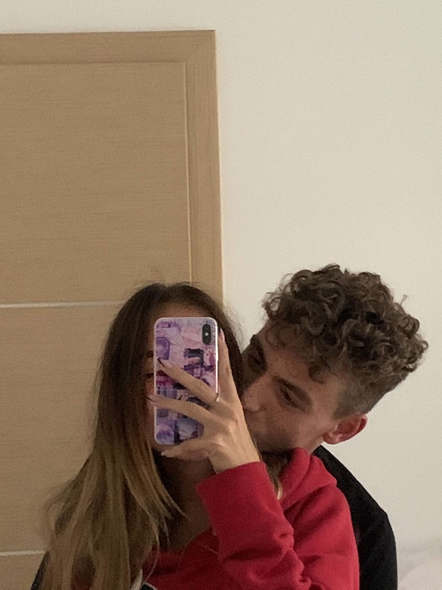
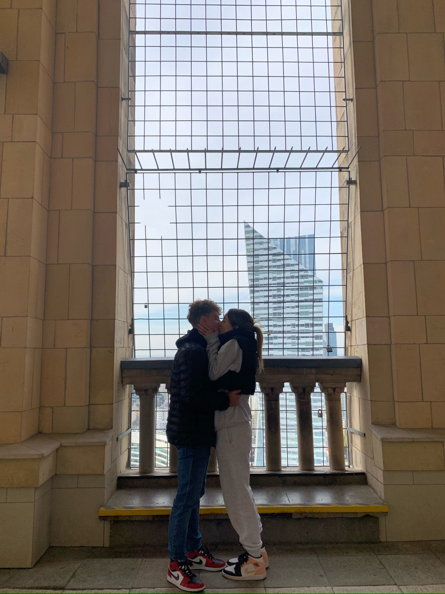
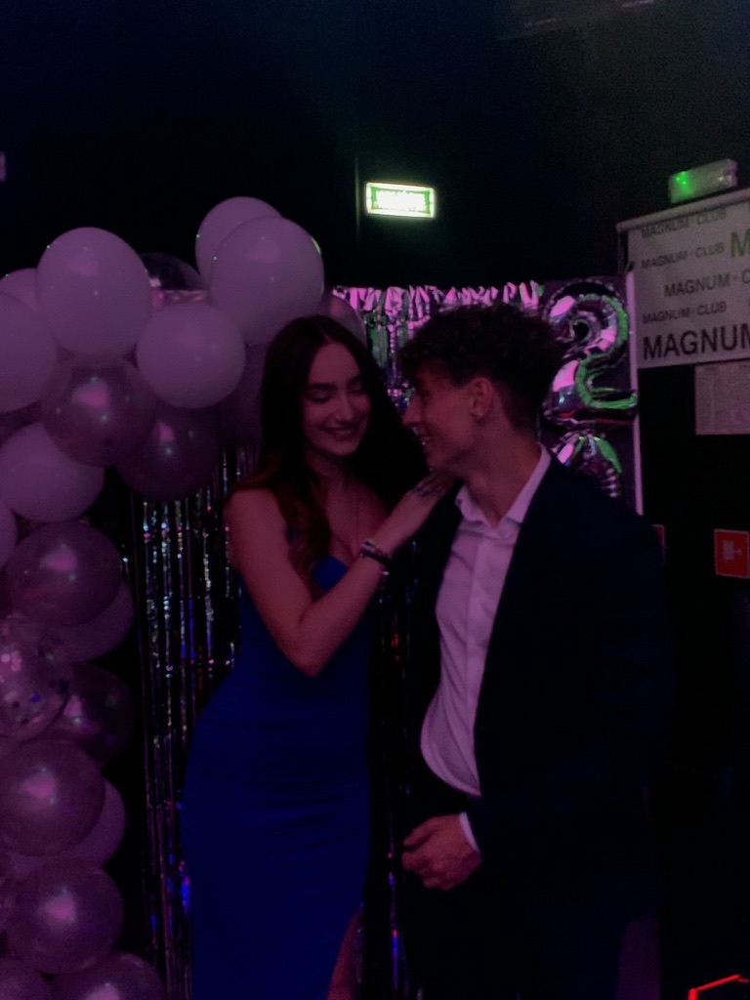
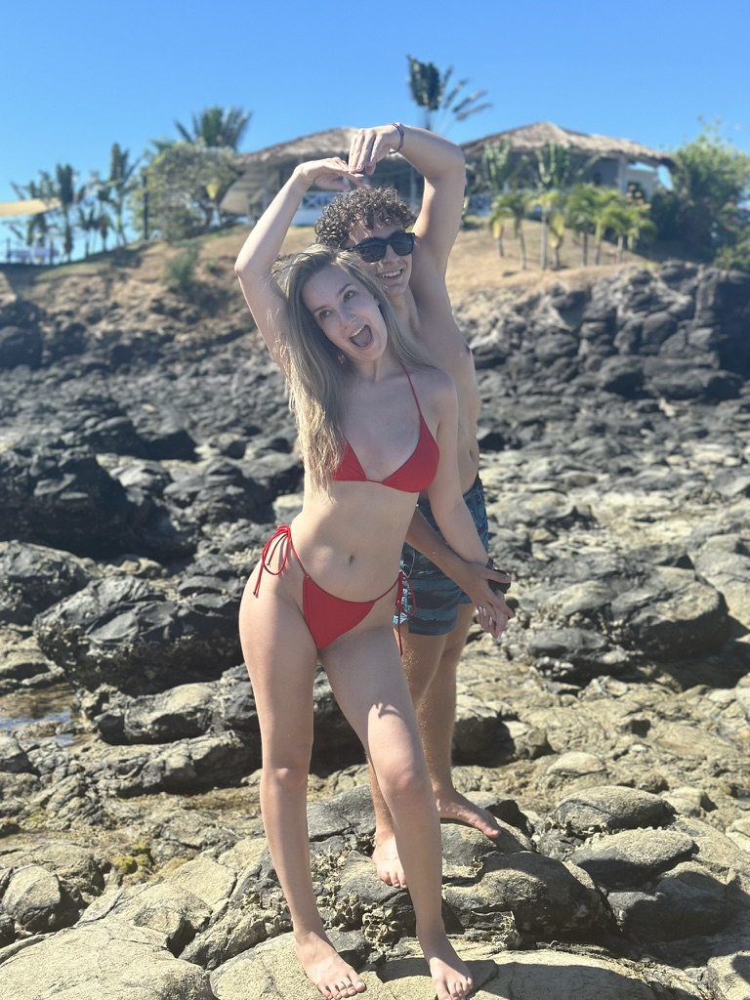
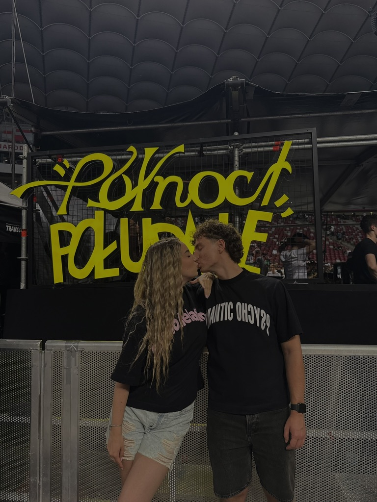
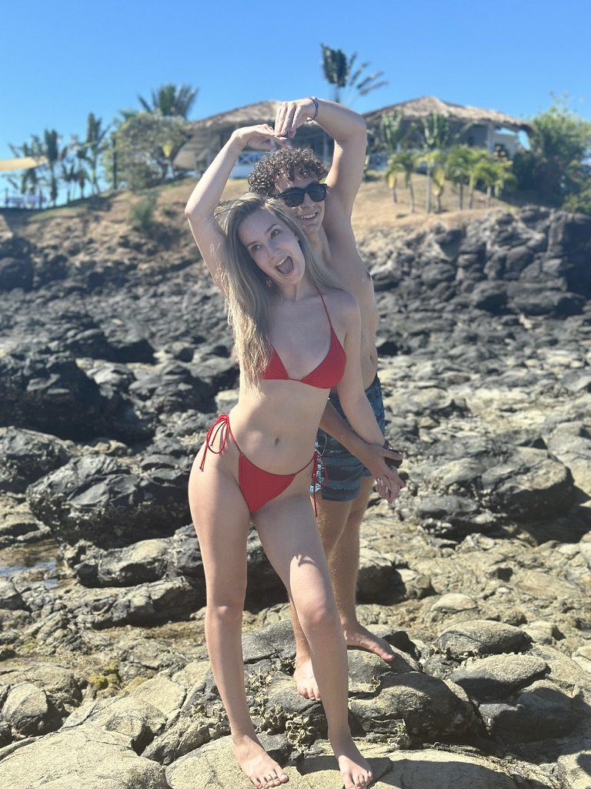
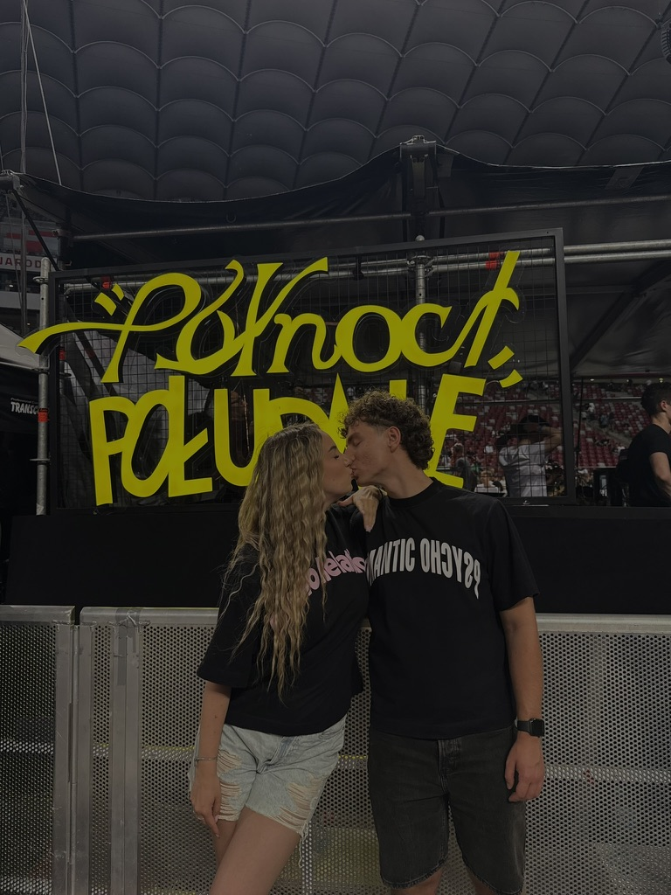
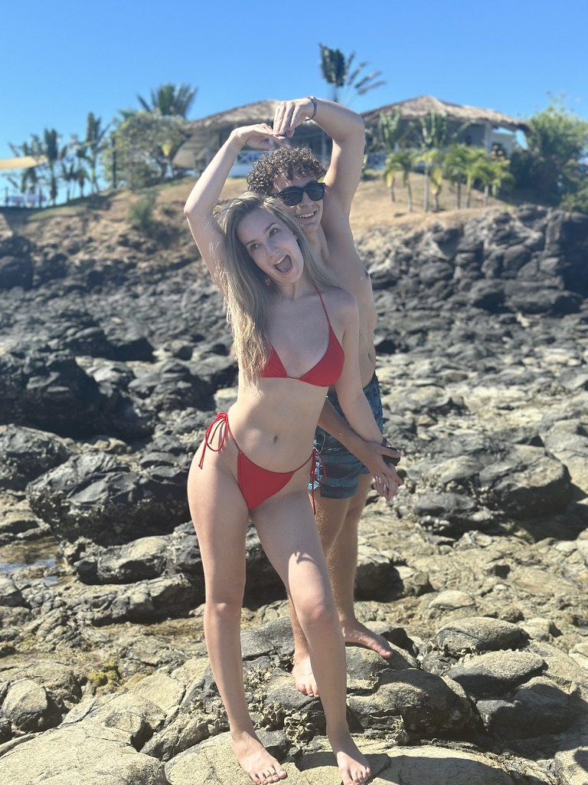
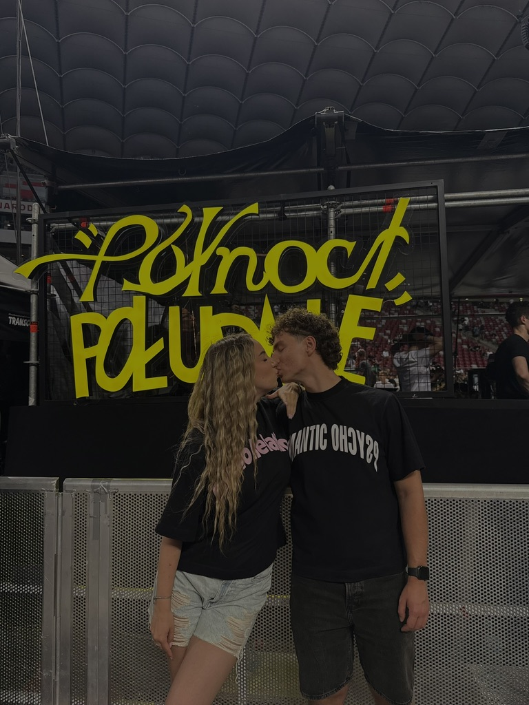

❤️ 5 lat razem ❤️
Kochanie, dziękuję za każdy wspólny dzień. Zamiast kartki tym razem chcę Ci dać coś takiego ;*



 





Nasza historia 📖
- 2020 – Pierwszy "Deszcz na betonie", pierwsza wycieczka do zoo, wspólny lockdown
- 2021 – Pierwsza rocznica, druga klasa w LO i wspólne kwarantanny
- 2022 – Nauka jazdy na nartach, półmetek, Que i Mata
- 2023 – 18-tki, Kraków i początki maturalnej
- 2024 – Studniówka, matura, Taco, pierwsze wspólne wczasy i Wrocław
- 2025 – 20-tka, Que v2, pierwsze wczasy tylko we dwójkę i 5 lat razem ❤️